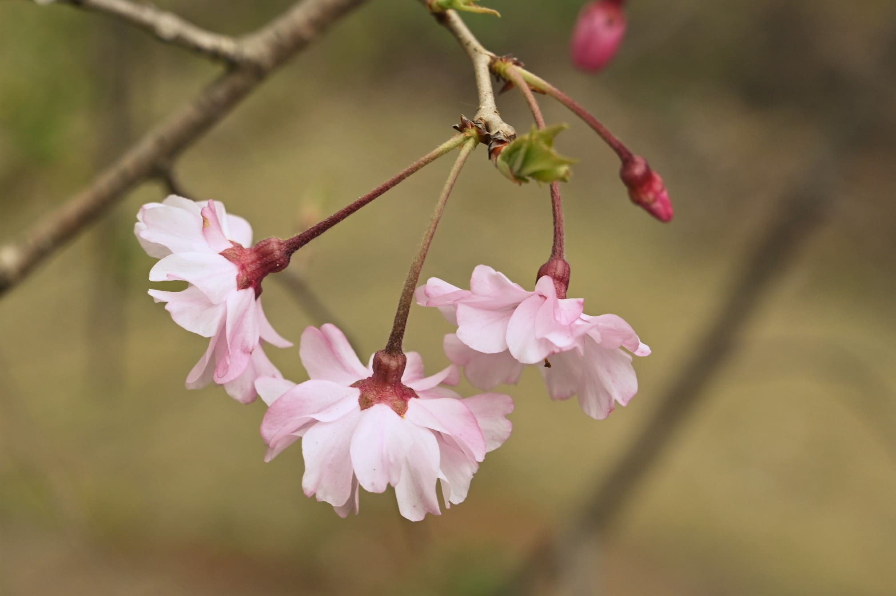
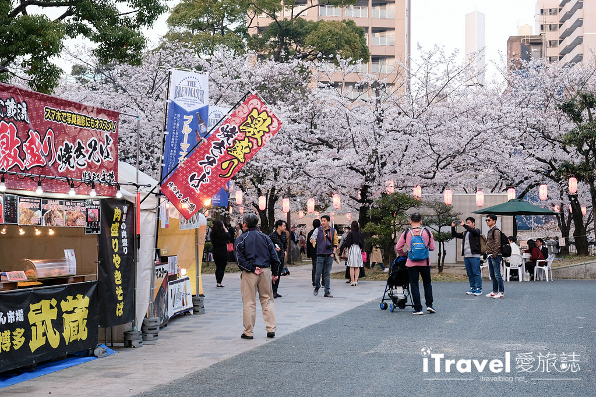
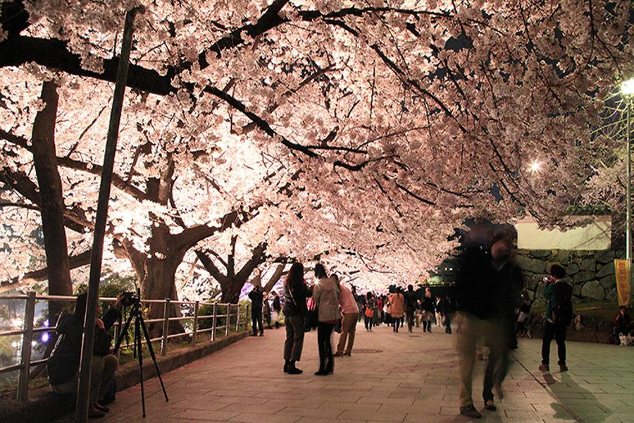
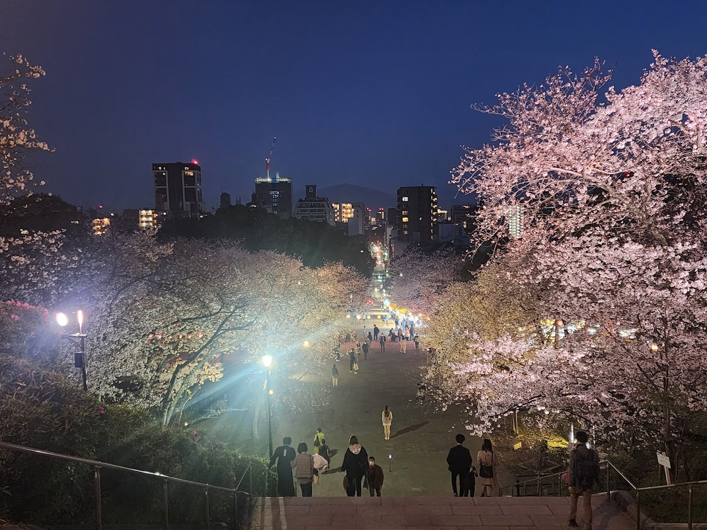

1.天神中央公園(福岡市中央区)
みどころ：同公園内に売店あり、ベンチ、芝生、夜間ライトアップ 開催日時：3/30(日)14:00‐18:00
2.舞鶴公園(福岡市中央区)
みどころ：売店等グルメエリア,BBQキャンプエリア,舞鶴城,夜間ライトアップ等

最寄り駅:大堀公園駅 徒歩5分
花見開催日時：3/31(火)18:00‐22:00
3.西公園(福岡市中央区)
みどころ：
福岡県内で唯一の "さくら名所100選"
※さくら名所100選…「日本さくらの会」選定による名所

最寄り駅:大堀公園駅 徒歩10分
花見開催日時：4/1(火)18:00‐22:00
🌸花見参加応募フォーム🌸
メールアドレスを入力の上、送信ボタンを押してください。
案内メールを自動返信にてお送りいたします。
メールアドレス：